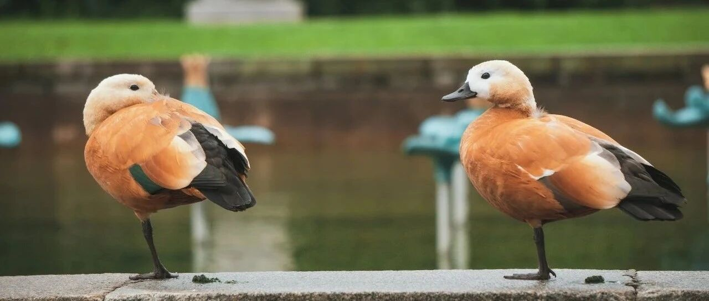

最好的下一步
慢慢开始喜欢上这种每天唠唠嗑的感觉。
能感受很多宏观之外的微观个体，一个个有血有肉有温度的人，我们国家疆域很大，人口很多，区域、行业、经历等各不一样，每个人对宏观和微观的感知自然也就不一样，多交流，有利于自己调整偏差。
就像楼市，有的城市冷冻，三亚等地因供应量少楼市火热；就像经济，每个人感知都不一样，有的行业下行，有的行业火热。分化，已成为一个系统思考问题时必须参考的词。
一直以来，把自己真实的观点和看法写一写，权当分享交流，我很喜欢这种感觉。但也很讨厌小白、二极管，掩饰不住的那种，全部装入黑名单。
如，我写碧桂园和龙湖的情况，是希望利益相关的读者们，能针对性去做措施；我写行业情况（预警），是希望读者们根据自己的情况下，去做相应的调整，如降低杠杆、及时储备现金、择业买房避坑......
不管一个人的处境多么困难，永远会有相对较好的下一步，哪怕选项再糟糕，也请冷静地选择概率相对较大的那一项，然后全力以赴做好。
企业其实也这样，你将自己代入到它的处境中，就能大概推算出有哪些路可走，走这些路有哪些要克服的困难和障碍，然后再选择一条可行性最大的。
人也是如此，就像闹得沸沸扬扬的许家印和丁玉梅技术性离婚，也是在权衡利弊后，选择了看起来最好的下一步。很多媒体说什么婚内的债务共同承担，就算离了婚，也没什么用。
这些媒体专业度很低，天机曾写过，许家印和丁玉梅是通过离岸信托的架构控制恒大，夫妻俩都不是境内恒大集团、任何子公司孙公司的法人，法律上并不承担恒大的债务。
这些大佬们平时粉饰得多有责任感没用，到真的需要负责时，能不钻空子将资产捐自己的公益慈善、离岸信托配合离婚方式等转移资产的人，才真正称得上有责任感，有责任心，负责任。
... ...
1、腾讯公布了半年报，Q2营收1492亿元，同比增长11%，经调利润375.5亿元，同比增长33%，亮点是网络广告业务增长34%，其中视频号成为最靓的崽，广告收入30亿元，用户时长同比翻倍。
未来视频号的成长空间还很大，做到年营收500亿元+可以期待。现在各平台流量已经进入红海，想做自媒体的不妨关注下视频号，这是普通人为数不多可以参与的。
视频号背靠微信这个大平台，客群更丰富，成长空间大；从购买力上来看，客单价也比抖快要高；目前做视频号的竞争，不如抖快的剧烈。缺点嘛，也很明显，就是用户的粘性不够强，视频号的算法精准度仍需提升，以及商业化刚起步，仍在摸索期。
一开始的视频号，直播乱象多，一堆女的在那扭屁股搞擦边，还有人打赏，我没看明白，你看的是精装修，打什么赏？人家榜一大哥看的是毛胚，打点赏正常。现在的视频号，看起来正常多了，起码让人有了点使用的意愿。
我是没打算做视频类的，能抽点时间公众号码码字就很好了，现在的职业是带娃。打算长期持有手中大部分的腾讯股票，20倍的PE，不贵。
2、中信信托一贵阳项目印鉴外借使用途中遭抢夺。中信信托的人在敌众我寡、一个负伤的情况下，成功将印鉴追回，送回银行保险箱。这个信托产品底层为融创集团在贵阳、成都和绍兴的三个地产项目。
这几年，房地产公司及项目，时常上演印鉴争夺战：不久前的厦门国际信托和正荣等抢夺，石榴集团的内讧，去年10月中融信托与融创共管的保险柜锁芯被换、十多亿元资金被划走.....
最高端的商战，往往只需要最朴素的物理攻击。
3、8月15日降息15个基点后，8月20日LPR大概率也会下调，直白点就是房贷利率预计又要下降了。
4、人民币汇率在7.34后，今天突然有一波拉升，去年十月至今，已经多次在7.3左右的位置被拉升了，说明7.3这个点位很重要，是个底线。
5、11年前的今天，公众号平台上线，从此命运的齿轮开始转动......于是，有了如今的我们能聚在这里唠唠嗑。
我闯进公众号这个圈子很晚，这个平台卧虎藏龙，在这认识的一些大V身家不菲。当然，他们的收入并非全部来自公众号，很多主要来自公众号之外。
公众号更像一个放大器，一个平台杠杆，它改变了很多人的命运。